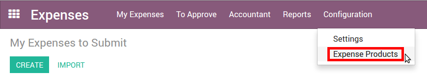

How to set expense types
The first step to track expenses is to configure the expense types (managed as products in Odoo) that your company allows, from the Configuration menu. When a specific expense is reimbursed at a fixed price, set a cost on the product. Otherwise keep the cost at 0.0 and employees will report the real cost per expense.
Here are some examples to configure:
Restaurant:
- Cost: 0.00 (the cost of the ticket will be recorded on every expense)
Travel with Personal Car:
- Cost: 0.30 (the price per mile reimbursed by the company is fixed)
Hotel:
- Cost: 0.00 (the cost of the ticket will be recorded on every expense)
Others:
- Cost: 0.0
Don’t forget to set an expense tax on each expense type (and an account if you use Odoo Accounting). It’s usually a good practice to use a tax that is configured with Tax Included in Price (see: How to set tax-included prices). That way, employees report expenses with prices including taxes, which is usually the expected behaviour.
Tip
The Sales app allows you to specify unit of measures for your expense types (units, miles, nights, etc.). Go to and check Some products may be sold/purchased in different units of measure (advanced).
How to record expenses
Manually
As an employee (Employee in user access rights), you can record expenses from .

- Select the related product and enter either the total amount you paid (with Quantity = 1) or the unit price if Quantity is countable (e.g. number of hotel nights).
- Enter the expense date.
- Choose if you paid the bill on your own (and expect to be reimbursed) or if the company paid directly (e.g. if you used a company's credit card).
- Set the bill reference, add some notes if requested and attach a photo/scan of the receipt from the discussion thread. That will help the manager and the accountant validate it.
In one click from emails
Let your employees record their expenses from a simple email. Make a snapshot of the receipt and send it by email, or simply forward a bill!
The only thing to do is setting up an email alias in (e.g. expenses @mycompany.odoo.com). For security purposes, only authenticated employee emails (cfr. Work Email in employee detail form) are accepted.
Tip
The expense product is set automatically if the mail subject contains the product's internal reference between brackets (e.g. [Food]). Type the expense amount in the mail subject to set it on the expense too.
How to submit expenses to managers
When you are ready to submit your expenses to your manager (e.g. at the end of a business trip, or once a month), go to the menu . Select all expenses from the list view and click on . Save the newly created expense report (i.e. set of expenses), and wait for your manager to approve it.

You can also submit expenses one by one from the Submit to Manager button on the form view of an expense.
All your submitted expense reports can be found in .
How to approve expenses
HR and team managers get an overview of all expense reports to validate from the top menu . Such users must have at least Officers access rights for Expenses.

They can review expense reports, approve or reject them, as well as providing feedback thanks to the integrated communication tool.

As a team manager you can easily find the expense reports of your team members. You need to be set as manager in the detail form of those employees.

How to post expenses in accounting
Once expense reports approved by managers, the accounting department goes to to check accounts, products and taxes. They can click Post Journal Entries to post related journal entries into your books. To do so, the user must have following access rights:
- Accounting: Accountant or Adviser
- Expenses: Manager
Note
To post an expense, a Home Address must be set on the employee. If you get a related blocking message when posting, click the employee, go to Personal Information tab and select/create the contact of your employee in the address book. A contact has been automatically created if this person is using Odoo.
How to reimburse employees
You can now see all the expense reports to reimburse in . To record the payment or pay by check, click Register a Payment.
See how you can easily manage the payment process in Odoo:
How to reinvoice expenses to your customers
If you track expenses on customer projects, you can charge them back to your customers automatically.
Setup
- Install Sales app if not yet done.
- Go to and install Analytic Accounting* (in Recommended Features).
Go to and set the invoicing method on all your Expense types:
- At cost: will invoice expenses at their real cost.
- At sales price: will invoice based on a fixed sales price defined in the product form.
Create an order
- As a salesman, create and confirm a Sales Order for the services delivered to your customer. Don’t put any expense in the order. They will be added automatically once posted by the accountant.
- Link this order to an analytic account dedicated to the customer project. You can create it on the fly.
Tip
If you track Timesheets on customer projects, Odoo can create an analytic account automatically once the order confirmed. It's useful if your employees must record timesheets on customer-specific projects. To do so, open your order product (service item) and make sure Track Service is set on Timesheets on project.
Submit, validate and post expenses
- As a manager, make sure the analytic account is set on every expense line on approving expenses reports. Click the line to add one if missing. Employees are already able to set one when submitting.
- As an accountant, post journal entries.
Invoice expenses
Now you can invoice the order.It shows up in . The expenses have been added automatically in the order lines. Such items show up in blue (i.e. to invoice).